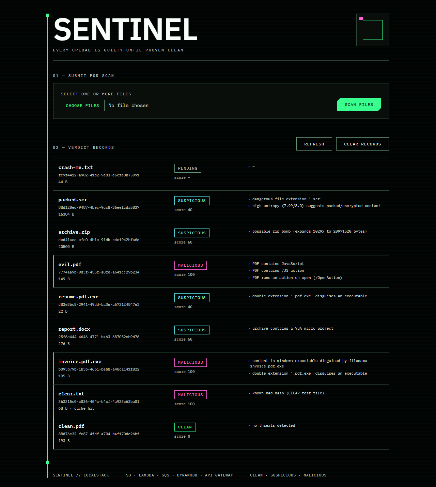
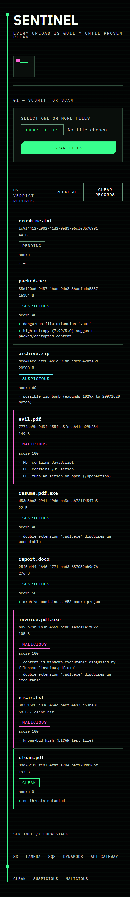
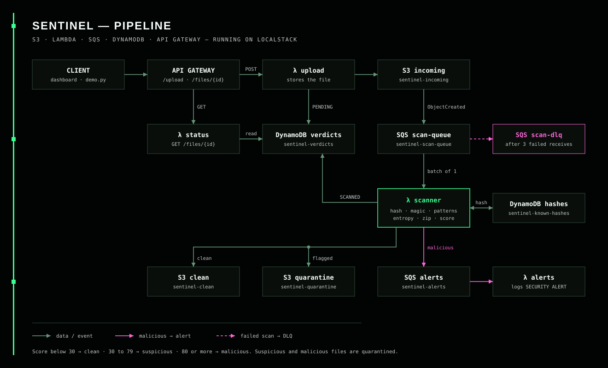

Clean
Released
- Score
- 0 to 29
- Goes to
sentinel-clean
- No alert is raised.
- From the demo:
clean.pdfscored 0, “no threats detected”.
Every upload is guilty until proven clean
Sentinel is a file-scanning pipeline. A new upload is held back, not shared. A scanner checks it, gives it a risk score with the reasons, and then either releases it or locks it in quarantine. Dangerous files also raise a security alert. It is built on S3, Lambda, SQS, DynamoDB and API Gateway, defined in Terraform, and runs entirely on your laptop with LocalStack and Docker.
01 / How it works
Each step is its own AWS service, connected by events. The upload API never scans anything itself. It stores the file and lets S3 and SQS start the rest.
A client sends the file as base64 to POST /upload. The upload Lambda stores it and records it as PENDING, then answers 202 with a file_id.
s3://sentinel-incoming + DynamoDB
S3 sends an object-created event to SQS. The queue absorbs bursts of uploads so the scanner works at a steady pace.
S3 event →sentinel-scan-queue
The scanner skips files it has already finished, hashes the bytes, and checks the hash cache. On a cache miss it runs every check and caches the result.
λ scanner ↔sentinel-known-hashes
Clean files are released. Suspicious and malicious files are moved to quarantine, not deleted. The record becomes SCANNED with its score and reasons.
sentinel-clean or sentinel-quarantine + sentinel-verdicts
Malicious verdicts go to a separate queue. The alerts Lambda writes a SECURITY ALERT line with the file, score and reasons.
sentinel-alerts → λ alerts → CloudWatch Logs
SQS delivers the message again. After 3 failed attempts it moves to the dead-letter queue, so one bad file can't block the others.
sentinel-scan-queue → sentinel-scan-dlq
02 / Scanner checks
Every check adds points. The total is capped at 100. Each check is a plain Python function, so all of them are unit tested without Docker.
Identical content gets the earlier verdict straight from DynamoDB. The EICAR test file is seeded as known-bad.
Reads the real file type from its first bytes. An executable dressed as a PDF scores 70; other mismatches score 25.
Double extensions like resume.pdf.exe, the right-to-left override character, and dangerous extensions.
The EICAR signature, PDF JavaScript, open and launch actions, and encoded PowerShell commands.
Random-looking data (7.5 bits per byte or more) suggests a packed or encrypted payload.
Zip bombs, VBA macros, embedded executables, encrypted or nested archives. Archives are never extracted.
03 / Verdicts
Every verdict lists the reasons that produced it, so a flagged file can always be explained.
sentinel-cleanclean.pdf scored 0, “no threats detected”.sentinel-quarantinereport.docx 50 (VBA macro), archive.zip 60 (expands 1029×), resume.pdf.exe 40.sentinel-quarantineSECURITY ALERT is logged through the alerts queue.eicar.txt, invoice.pdf.exe and evil.pdf, all 100.04 / Reliability
The pipeline expects things to go wrong and keeps every file accounted for.
Upload spikes wait in the queue instead of overloading the scanner.
A failing scan is retried, then parked in sentinel-scan-dlq. Try crash-me.txt.
Finished files are skipped, and repeated content reuses its cached verdict.
Flagged files are moved aside and kept, so nothing is lost.
ZIP files are judged from their headers. Nothing is unpacked.
Alerts run on their own queue and Lambda, so a slow alert never delays scanning.
05 / See it run
A small local dashboard uploads files through the real API and lists every verdict from DynamoDB. You can scan several files at once and clear the records to start over.

make demo, read live from DynamoDB.
Open full screenshot

At 390px the records stack into single columns and keep their reasons.
Mobile screenshot
Client, API Gateway, four Lambdas, three buckets, three queues and two tables.
Open diagram06 / Demo results
Output of scripts/demo.py against the live LocalStack stack. All sample files are generated and harmless.
| File | Expected | Actual | Result |
|---|---|---|---|
| clean.pdf | clean | clean (0) | PASS |
| eicar.txt | malicious | malicious (100) | PASS |
| invoice.pdf.exe | malicious | malicious (100) | PASS |
| report.docx | suspicious | suspicious (50) | PASS |
| resume.pdf.exe | suspicious | suspicious (40) | PASS |
| evil.pdf | malicious | malicious (100) | PASS |
| archive.zip | suspicious | suspicious (60) | PASS |
| packed.scr | suspicious | suspicious (40) | PASS |
| crash-me.txt | dead-letter | fails on purpose | DLQ |
07 / Built with
LocalStack runs the AWS services inside one Docker container. Terraform creates every resource.
AWS icons are the official AWS Architecture Icons, © Amazon Web Services, Inc., used unmodified under the AWS icon terms. Terraform, Docker and Python icons from Devicon. The LocalStack logo belongs to LocalStack. Sentinel is not affiliated with AWS.
08 / Quick start
You need Docker Desktop, Terraform 1.5 or newer, and Python 3.10 or newer. No AWS account, no credit card, no LocalStack token.
git clone https://github.com/nonsense3/Sentinel.git
cd Sentinel
Copy-Item .env.example .env
pip install -r requirements-dev.txt
.\make.ps1 up
.\make.ps1 demo
.\make.ps1 dashboardgit clone https://github.com/nonsense3/Sentinel.git
cd Sentinel
cp .env.example .env
pip install -r requirements-dev.txt
make up
make demo
make dashboard09 / Questions
No.Sentinel runs on your own machine through LocalStack. This page describes the project; the scanning happens after you clone and start it.
No. LocalStack ignores credential values. The .env.example file uses test / test, and nothing reaches real AWS.
No. The pinned community image (localstack/localstack:3.8) runs every service Sentinel uses. A Pro token is only needed if you want data to survive container restarts.
No. It uses heuristic checks and the standard EICAR test string. It never uses real malware, and it is a demonstration rather than production security.
The community image doesn't keep data when the container restarts. Run make deploy (or .\make.ps1 deploy) to recreate everything, then restart the dashboard.
Nothing is shared until it passes.